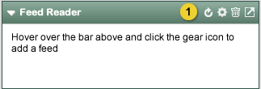

Home > Product Specification > Start Page Apps > Feed Reader App
Feed Reader App
Suggestions App
Start Page Apps
Overview
The feed reader app allows the user to view a particular feed
Conditions of satisfaction
- The app must display the contents off a given RSS/ATOM source
- The app must display popular subscriptions across the system
- The app must display popular subscriptions from the user’s following list
User experience

- Empty App.

- On mouse over, tools appear to the Knowledge Worker. The Knowledge Worker selects the ‘gear’ icon to configure the Feed Reader App.

- The Knowledge Worker enters the RSS or Atom feed URL for here.
- Once the URL is entered, the Knowledge Worker selects Save to save off configuration settings and begin reading from the specified feed.
- The Knowledge Worker may select Cancel to returen to the empty App.
App View

- Title of feed.
- Title of the first feed/article. Links to the full article on the source site in a new browser window.
- Links to the full article on the source site in a new browser window.
- Banner image from feed (if available).
- Collaspable section featuring the seven most recent feeds from the source site.
- Feed from the source site. Clicking will open the feed app in canvas mode with this article featured in the right-hand pane.
- Opens canvas view.
Canvas View

- Currently selected feed.
- Feed title, links to full article on the source site in a new browser window.
- Feed summary.
- Link to rate or comment on article
- Click to share this feed on the Knowledge Workers profile.
- Click to open a new window showing all feeds from the source site.
- Click to close the canvas view and return to the default feed app view.
Test plans
- Verify a Knowledge Worker can display the contents off a given RSS/ATOM source
- Verify the contents are displayed when the feed reader is configured to read from an RSS source
- Verify the contents are displayed when the feed reader is configured to read from an ATOM source
- Verify that no more than 8 entries are displayed from the app view
- Verify that the summary text from the first entry is displayed in “head line” form at the top of the app view
- Verify that a link to the full article is visible for the first entry
- Verify that clicking on entries 2-8 in the app view will open the app in the canvas view
- Verify that clicking on the “See more” link will open the app in canvas view
- Verify the default for canvas view, when no particular article was selected, is to display the first article on the right
- Verify clicking on one of the entry headings displays that entry’s article on the right side of the canvas view
- Verify clicking “View All” link in canvas view opens the feed in a new window
- Verify a Knowledge Worker can share a feed entry to his employee stream from a feed app
- Verify that a feed entry can be shared to an employee stream from a feed app
| PAGE CONTENTS
Version 1.5
Documentation is also available for all of the following versions:
0.9 | 1.0 | 1.1 | 2.0
|